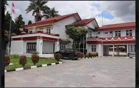
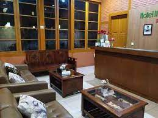
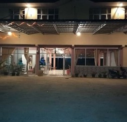
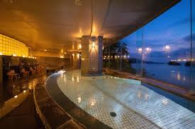
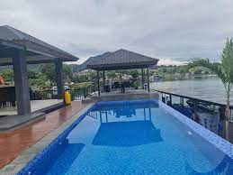
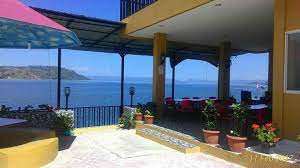
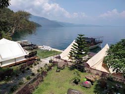
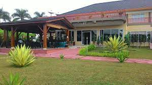

1. Hotel Ompu Herti
Terletak di Balige, 2,2 km dari Pantai Lumban Bul Bul, Hotel Ompu Herti menawarkan akomodasi dengan restoran, parkir pribadi gratis, taman, dan teras. Akomodasi ini berjarak sekitar 9,2 km dari Laguboti, 12 km dari Bonandolok, dan 14 km dari Hutasalem. Akomodasi ini menawarkan resepsionis 24 jam, layanan antar-jemput, layanan kamar, dan Wi-Fi gratis di seluruh areanya. Hotel ini menawarkan sarapan prasmanan atau halal..Ompu Herti Hotel adalah akomodasi dengan fasilitas baik dan kualitas pelayanan memuaskan menurut sebagian besar tamu. Pelayanan yang baik dengan harga terjangkau akan membuat Anda merasa nyaman menginap di Ompu Herti Hotel. Enjoy your holiday with Ompu Herti Hotel.

2. Hotel Ita Soposurung
Terletak di Toba, Hotel Ita Soposurung menawarkan akomodasi dengan akses mudah ke tempat-tempat terbaik di Toba. Properti ini memiliki restoran, WiFi, dan tempat parkir. Kamar-kamar di Hotel Ita Soposurung dilengkapi dengan AC, TV, dan pembuat kopi-teh. Kamar mandinya dilengkapi dengan shower dan perlengkapan mandi gratis. Tamu dari segala usia dipersilakan untuk menginap. Anak-anak berusia 5 tahun ke atas akan dianggap sebagai orang dewasa. Harap pastikan bahwa usia anak sesuai dengan informasi yang tercantum pada rincian pemesanan Anda. Jika tidak, Anda mungkin harus membayar biaya tambahan pada saat check-in.

3. Aquino Marito Homestay
Aquino Marito Homestay RedPartner merupakan salah satu hotel di Toba yang dilengkapi dengan berbagai fasilitas untuk menunjang kenyamanan, seperti; kamar bebas rokok, Wifi, resepsionis 24 jam, dan air mineral. Berada di lokasi yang strategis, dekat dengan Bukit Pahoda (2.8 km), Museum Batak Tb Silalahi Center (1.7 km), Tepi Danau Bistro (2.1 km), dan Pasar Balige (3.3 km), Anda dapat mengakses Aquino Marito Homestay RedPartner dengan berbagai pilihan. pilihan transportasi umum seperti bus, taksi, dan transportasi online

4. Grand Toba Hotel
Grand Toba Hotel menawarkan akomodasi di Toba dan berjarak sejauh 3,5 km dari Bukit Pahoda. Properti ini menyediakan Wi-Fi gratis. Setiap kamar dilengkapi dengan TV layar datar. Kamar mandinya dilengkapi dengan pancuran. Para tamu dapat menikmati hidangan di Sate Padang Buyung. Pilihan tempat makan lainnya juga terdapat di sekitar properti. Fasilitas lain di Grand Toba Hotel adalah bagian penerima tamu 24 jam. Bandara terdekat adalah Bandara Internasional Silangit, 17,9 km dari akomodasi.

5. Purnama Balige Hotel
Hotel ini adalah pilihan tepat bagi Anda dan pasangan yang ingin menikmati liburan romantis. Berbagai fasilitas yang tersedia dan kualitas pelayanan yang baik akan membuat Anda merasa sedang berada di rumah sendiri. Nikmati kualitas layanan terbaik dan pengalaman mengesankan selama menginap, dengan harga terjangkau, namun tetap memberikan pelayanan yang baik. Tersedia kolam renang restoran. Resepsionis siap 24 jam untuk melayani. WiFi tersedia di seluruh area publik properti.Purnama Balige Hotel adalah pilihan tepat bagi Anda yang mengutamakan kenyamanan beristirahat tanpa menguras kantong.
6. Hotel Sumatera Balige
Kamar Hotel Sumatera Balige Anggaplah seperti rumah sendiri di salah satu dari 32 kamar. Akses Internet nirkabel gratis akan membuat Anda tetap terhubung, dan program kabel tersedia untuk hiburan Anda. Kamar mandinya dilengkapi shower dan perlengkapan mandi gratis. Fasilitas mencakup meja tulis, dan layanan pembenahan kamar disediakan setiap hari.Anda dapat menikmati hidangan di restoran yang melayani tamu Hotel Sumatera Balige, atau mampir ke toko kelontong/toko serba ada.

7. Nabasa Hotel
Hotel Nabasa adalah tempat ideal bagi wisatawan yang ingin menjelajahi kota. Hotel Nabasa menawarkan pengalaman menginap yang menyenangkan di Balige bagi mereka yang bepergian untuk bisnis atau liburan. Bandara Silangit merupakan pilihan transportasi utama terdekat, berjarak kurang lebih 18km. Bandara Silangit berjarak sekitar 18 km melalui jalan darat. Berwisata di area ini mudah dilakukan, karena Pusat TB Silalahi (Museum Balige) dan Pantai Lumban Bul-Bul keduanya berada tidak jauh. Di penghujung hari yang sibuk, wisatawan dapat melepas lelah dan bersantai di hotel atau keluar dan menikmati kota.

8. Pondok Berata Dapdap
Semua unit memiliki dapur kecil lengkap agar Anda dapat menyiapkan makanan sendiri. Beberapa unit memiliki teras dan/atau balkon dengan pemandangan pegunungan. Sarapan Asia tersedia setiap pagi di B&B ini. Pondok Berata Dapdap menawarkan fasilitas barbekyu. Area pantai pribadi dapat ditemukan di akomodasi, bersama dengan lounge bersama. Parapat berjarak 65 km dari akomodasi. Akses dari Balige adalah 30 menit dengan perahu. Pasangan paling suka lokasinya mereka memberi nilai 10 untuk perjalanan dua orang.
